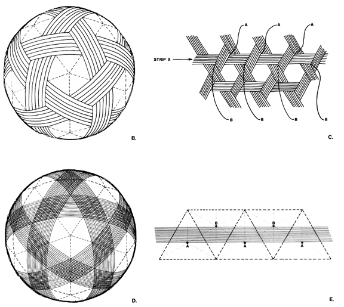

Fig. 1033.111 B-D:
B. Diagram of three-way grid sphere.
C. Band widths of frequency tunability.
D. Six great circle band widths of spherical icosahedron.
E. Centers of volumes of tetrahedra are control matrix for electromagnetic band widths.
Copyright © 1997 Estate of R. Buckminster Fuller